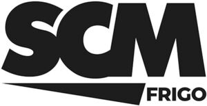

Trade Mark Journal No.2025/028 11 July 2025
WO0000001861193 (11)
Office of origin: Italy
Date of International Registration:16 December 2024
Date of designation in the UK:
16 December 2024

The trademark is constituted by the initials SCM in fancy characters, having in an underlying position a triangular figure in the manner of an underlining followed by the wording FRIGO in fancy characters.
International priority date claimed: 5 August 2024
(Italy)
(302024000125029)
- Class 11
- Gas condensers, other than parts of machines; gas refrigerators; air-treatment units; air cooling apparatus; cooling installations and machines; air- conditioning installations; refrigerating apparatus in the form of cooling units: refrigerating machines; apparatus and installations for lighting, heating, cooling, steam generating, cooking, drying, ventilating, water supply and sanitary purposes; heat pumps; cooling elements; water cooling towers; heat exchangers for air-conditioning apparatus, for refrigerating apparatus, for cooling apparatus; pressurization units for refrigerating apparatus and machines; membranes for water treatment apparatus; ice machines and apparatus; pressure water tanks; refrigerators; refrigerating counters; refrigerated shipping containers; freezers; refrigerator-freezers; refrigerating cabinets; refrigerating chambers; refrigerating containers; portable refrigerators; freezing apparatus and installations; water coolers; heat exchangers, not parts of machines; fans [air-conditioning]; cooling evaporators; walk-in coolers; ventilators for heat exchangers; electric autoclaves; hot water heating installations; level controlling valves in tanks; expansion tanks for central heating installations; flushing tanks; air valves for steam heating installations; dosing valves [parts of heating or gas installations]; thermostatic valves [parts of heating installations]; desiccating apparatus; burners; watering machines for agricultural purposes; regulating and safety accessories for water apparatus; purification installations for sewage; fountains; filters for air conditioning; water heaters for industrial use; regulating accessories for water or gas apparatus and pipes; aquarium lights; sewage treatment plants; water softening apparatus and installations; aquarium heaters; cooling installations for water; drip irrigation emitters [irrigation fittings]; anti-splash tap nozzles; pipes [parts of sanitary installations]; water intake apparatus; water conduits installations; water distribution installations; desalination plants; flushing apparatus; water purification installations; bioreactors for use in the treatment of wastewater; waste water treatment tanks; swimming pool chlorinating apparatus; filters for drinking water; water heaters; whirlpool-jet apparatus; industrial and commercial refrigeration systems.
SCM FRIGO S.P.A.
Representative: Dr. Modiano & Associati SpA, Via Meravigli 16, I-20123 Milano, ITALY